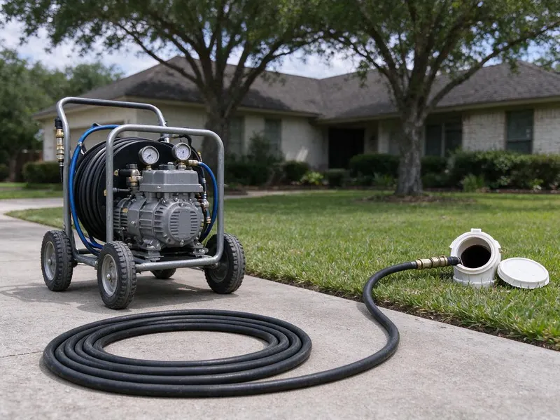
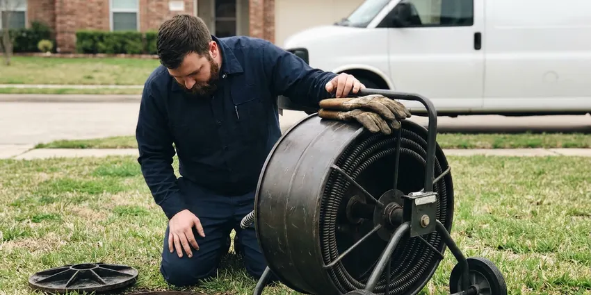

Hydro Jetting in Beaumont, TX
For tough blockages in Beaumont, TX that traditional methods can't clear, hydro jetting from DFJ Plumbing is the answer.
- Fast, Effective Cleaning
- High-Pressure Technology
- Removes Stubborn Buildup
- Prevents Future Clogs

Need Powerful Drain Cleaning? Get Hydro Jetting Service in Beaumont, TX.
Don't let recurring drain issues disrupt your home; contact us for a lasting solution.
Expert Hydro Jetting for Stubborn Clogs Across Beaumont, TX
When conventional snaking isn't enough, hydro jetting uses high-pressure water to scour the inside of your pipes, restoring them to near-original condition. DFJ Plumbing provides this powerful drain cleaning solution for homes and businesses throughout Beaumont, TX.
Our expertise includes:
- Clear grease, scale, and root intrusions.
- Restore full flow to residential and commercial pipes.
- Prevent recurring clogs with thorough pipe cleaning.

Additional Drain Services Services in Beaumont, TX
From stubborn kitchen clogs to main sewer backups, our drain services in Beaumont, TX clear the line and keep it clear with camera-verified results.



Sewer Cleaning near Beaumont


Customers
Why Choose DFJ Plumbing for Hydro Jetting in Beaumont, TX?
This service helps maintain the long-term health of your plumbing system by removing accumulation that contributes to repeated drain issues and potential pipe damage.
- Deep Clean, Unlike traditional snaking, hydro jetting completely cleans pipe walls, removing all debris.
- Root Removal, High-pressure water effectively cuts through and flushes out tree roots that infiltrate sewer lines.
- Grease & Sludge, It's the best method for dissolving and clearing heavy grease and sludge buildup common in kitchen drains.
Citywide Coverage
No matter where you are in Beaumont, our skilled plumbers are ready to deploy hydro jetting technology to resolve your most stubborn drain issues. We're committed to keeping the drains flowing smoothly throughout the entire Beaumont, TX area.
Experienced Team
Each technician at DFJ Plumbing is equipped with the knowledge and tools to handle different types of blockages and pipe diameters, delivering precise and powerful cleaning. You can trust our expertise for your hydro jetting needs in Beaumont, TX.
Safety-First Approach
Before initiating hydro jetting, we often conduct a camera inspection to ensure your pipes can withstand the high pressure, preventing potential damage. This careful approach ensures a safe and effective cleaning process for every job in Beaumont.
Trusted Certified Beaumont Plumbing Services Professionals
At DFJ Plumbing, we take pride in providing certified plumbing services throughout Beaumont, TX. Backed by recognized industry credentials, our experienced plumbers combine technical skill with genuine customer care. Whether it is repair, installation, or maintenance, we follow strict safety and quality standards to deliver long-lasting results you can trust.
Call Us Now PHCC Plumbing Contractor Recognition
PHCC Plumbing Contractor Recognition Better Business Bureau (BBB) Accreditation
Better Business Bureau (BBB) Accreditation Angi Certified Pro
Angi Certified Pro ISO 9001 Quality Management Certification
ISO 9001 Quality Management CertificationAdvanced Hydro Jetting Services in Beaumont, TX
Residential Hydro Jetting in Beaumont
For homeowners in Beaumont facing recurring clogs, slow drains, or foul odors, residential hydro jetting is a powerful solution. Our service targets common household culprits like grease buildup from kitchens, hair and soap scum from bathrooms, and even laundry detergent residue. We use specialized nozzles and adjustable pressure to safely clear blockages in pipes ranging from small kitchen lines to main sewer connections, restoring optimal drainage and preventing future issues.

Commercial Hydro Jetting in Beaumont, TX
Businesses in Beaumont, TX often deal with high volumes of waste and specific types of buildup, such as food grease in restaurants or industrial debris. Our commercial hydro jetting services are designed for the larger, more complex plumbing systems found in commercial properties. We effectively clear heavily impacted lines, preventing costly downtime and ensuring your business operations run smoothly. This service is crucial for maintaining health code compliance and avoiding severe backups in high-usage environments.
Main Sewer Line Hydro Jetting in Beaumont
The main sewer line is the backbone of your plumbing system, and clogs here can affect all your drains. In Beaumont, main sewer lines are often susceptible to tree root intrusion, especially from mature oak trees common in Texas. Hydro jetting is highly effective at cutting through and flushing out these roots, as well as clearing significant blockages caused by accumulated waste. We utilize powerful jetting equipment to thoroughly clean the entire length of your main sewer line, ensuring free flow to the municipal sewer system.
Preventative Maintenance Hydro Jetting in Beaumont, TX
Proactive hydro jetting can save Beaumont, TX property owners from unexpected plumbing emergencies. For homes and businesses with a history of drain issues or those prone to specific types of buildup, scheduled hydro jetting is an excellent preventative measure. By regularly removing scale, grease, and other debris before they cause a full blockage, you can extend the life of your pipes, avoid costly repairs, and maintain consistent drainage performance. We can set up a custom maintenance schedule tailored to your needs.
High-Pressure Water Jetting for Drain Cleaning in Beaumont
High-pressure water jetting, or hydro jetting, is a non-invasive method that uses highly pressurized water to clear and clean pipes. Our equipment in Beaumont can generate water pressures up to 4,000 PSI, powerful enough to break apart stubborn blockages and scour pipe walls clean without chemicals. This method is effective for various pipe materials, from PVC to cast iron, and is an environmentally friendly choice for deep drain cleaning.
Emergency Hydro Jetting Services in Beaumont, TX
When you have a severe, overflowing drain or a complete sewer backup in Beaumont, TX, you need immediate help. DFJ Plumbing offers emergency hydro jetting services to quickly resolve urgent plumbing crises. Our rapid response team can deploy advanced jetting equipment to clear critical blockages, minimizing water damage and restoring functionality to your plumbing system as fast as possible. Don't wait; call us when every second counts.
Sewer Line Descaling with Hydro Jetting in Beaumont
Over time, hard water mineral deposits and other materials can build up on the interior walls of sewer lines, forming a tough scale. This reduces pipe diameter and can lead to frequent clogs. In Beaumont, where water hardness can vary, descaling is often necessary. Hydro jetting is the most effective method for sewer line descaling, using powerful water jets to break down and flush away these mineral deposits, restoring the pipe's full carrying capacity and preventing future accumulation.

Hydro Jetting vs. Snaking Cost Comparison in Beaumont, TX
While snaking might be cheaper upfront for simple clogs, hydro jetting offers a more thorough and long-lasting solution, often saving money in the long run for Beaumont, TX residents. Snaking typically punches a hole through a blockage, leaving residue behind, which can lead to recurring clogs. Hydro jetting cleans the entire pipe, preventing future issues and reducing the frequency of service calls, making it a more cost-effective choice for persistent drain problems.
Expert Hydro Jetting Services Near Me in Beaumont, TX
If you're searching for 'hydro jetting near me' in Beaumont, TX, look no further than DFJ Plumbing. Our local team is strategically positioned to provide prompt and efficient service throughout the metropolitan area. We understand the unique plumbing challenges of Texas homes and businesses and are ready to tackle your toughest drain issues.
We pride ourselves on being the trusted local experts for advanced drain cleaning solutions. When you choose DFJ Plumbing for hydro jetting in Beaumont, you're choosing a company committed to delivering lasting results and exceptional customer service right in your neighborhood.
DFJ Plumbing at a Glance
- Fully licensed plumbing team covering Beaumont, TX
- Same-day appointments and 24/7 emergency response
- Upfront, flat-rate pricing before work begins
- 4.9-star rated by 812+ Texas customers
Beaumont Map
Beaumont Information
- Population
- 112,193
- Area codes
- 409/430/337
- Service area
- Beaumont and communities within 40 miles
- Nearby
- Port Arthur, Baytown, Atascocita, Texas City
Hydro jetting is particularly vital for homes in Beaumont, TX due to Texas's expansive clay soils, which can cause foundation shifts that stress and crack pipes, allowing root intrusion, and the potential for hard water buildup affecting drain lines over time.
Expert Services
Trust our professionals for reliable DFJ Plumbing solutions in Beaumont, TX.
Our Specialized Plumbing Services in Beaumont, TX
At DFJ Plumbing, we provide a complete range of plumbing services across Beaumont, TX. From leak detection to full system installations, our team ensures fast, precise, and affordable service for both residential and commercial properties. Explore our core services below:


How Our Hydro Jetting Process Works in Beaumont, TX
DFJ Plumbing follows a systematic approach to ensure your drains are cleaned completely and safely.
Request a Quote
Call (737) 405-5978 to schedule an appointment for your hydro jetting service. Our customer service team will gather initial information about your drain issues and set up a convenient time for a plumber to visit.
Initial Inspection
Before any jetting begins, our technician will perform a camera inspection of your pipes. This allows us to accurately diagnose the blockage type and assess the pipe's condition, ensuring hydro jetting is the right solution for your Beaumont property.
Hydro Jetting
Using advanced equipment, we insert a high-pressure hose with a specialized nozzle into your drain line. Water jets scour the pipe walls, breaking apart and flushing out grease, roots, scale, and other debris, restoring full flow.
Frequently Asked Questions About Hydro Jetting in Beaumont
The cost of hydro jetting in Beaumont, TX typically ranges from $300 to $800, depending on the severity of the clog, the length and diameter of the pipe, and ease of access. More complex jobs, like main sewer line descaling or extensive root removal, may be on the higher end. We provide a transparent quote after an initial inspection.
While hydro jetting effectively removes existing tree roots from your sewer line, it does not prevent new roots from growing back. For a long-term solution to recurring root intrusion, we might recommend trenchless sewer repair or pipe replacement options, which we can discuss during our assessment.
A standard residential hydro jetting service in Beaumont typically takes between 1 to 3 hours. This includes the initial camera inspection, the jetting process itself, and a final inspection. More extensive commercial jobs or severe main line blockages might require more time.
Generally, a permit is not required for standard hydro jetting services aimed at clearing blockages in existing lines. However, if the hydro jetting is part of a larger repair or replacement project that involves altering the plumbing system, a permit from Beaumont's permitting department may be necessary. We will advise you if a permit is needed for your specific situation.
DFJ Plumbing uses professional-grade hydro jetting equipment from trusted manufacturers like Spartan Tool and MyTana. These brands are known for their reliability, powerful performance, and advanced safety features, ensuring we deliver the most effective cleaning for your pipes.
For most modern and well-maintained pipes, hydro jetting is very safe. However, for very old, corroded, or severely damaged pipes, the high pressure could potentially cause further damage. That's why DFJ Plumbing always performs a camera inspection first to assess your pipe's condition and ensure hydro jetting is appropriate.
While small, low-pressure drain jetters are available for rent, professional hydro jetting equipment is significantly more powerful and requires specialized training to operate safely and effectively. Improper use can damage pipes, cause injury, or fail to clear the blockage. For severe clogs, it's always best to rely on experienced professionals like DFJ Plumbing.
Key signs you might need hydro jetting include frequently recurring clogs in the same drain, multiple slow drains throughout your home, persistent foul odors coming from drains, or gurgling sounds from toilets or drains. These often indicate a significant buildup or blockage that needs more than just a snake.
What People Are Saying About Our Plumbing Experts?

Daniel K.
A pipe burst at 11 pm and they actually answered. The plumber showed up within the hour, shut everything down, and had us back to normal the next morning. Could not ask for more.
Emergency Plumbing · Texas City, TX
Mark T.
When our office needed drain cleaning, DFJ Plumbing provided quick, reliable service. The plumber arrived on time and made sure every drain flowed perfectly before leaving. Very satisfied.
Drain Cleaning · Texas City, TX
Laura S.
I scheduled a water heater replacement, and the team made the process smooth and affordable. The new unit works perfectly, and they cleaned up after completing the job.
Water Heater Replacement · Texas City, TX
Robert G.
The trenchless sewer replacement saved our front yard. They walked us through the camera inspection footage first so we knew exactly what we were paying for.
Sewer Line Replacement · League City, TX
Patricia H.
We had a slab leak that two other companies could not find. DFJ Plumbing located it in under an hour, explained our options, and the price matched the quote to the dollar.
Slab Leak Repair · Port Arthur, TXSofia M.
Two new toilets installed in one visit, no mess left behind, and the tech even adjusted a faucet he noticed was dripping. Fair pricing and really friendly.
Toilet Installation · Texas City, TX